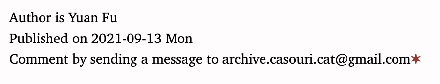

New link style for this blog
Hyperlink
Links in this blog has seen quite some change. In the past they have been marked by blue color, like this, and by dashed underline, like this. Now, a link is marked by a red star at the end, like this✶, and when hovered, the link is marked with red background, like this✶.
I copied this style from Matthew Butterick’s Practical Typography. I think its neat. He used a degree sign °, I changed that to a darker star sign ✶. I tried to use plain asterisk at first, but had difficulties styling it.
The size of the star should be uniform across different sizes of text. If the size of the star is relative to the size of the text surround it, the star would be too small in small text. With a uniform size, the star looks like superscript in body text, and inline symbol in small text:

Footnote
Hyperlinks in this blog look like footnotes, and in turn, footnotes in this blog look like hyperlinks—when hovered, the text referenced by the footnote is marked by red background. The only difference is in the symbol, hyperlinks are marked with ✶, and footnotes with numbers. A footnote looks something like
I like the uniformity: everything that takes you away is marked by a red superscript thingy (except for the obvious ones like menus and buttons).
Appendix: CSS for hyperlinks
The CSS styling I used for hyperlinks is
a { text-decoration: none; }
a:hover {
background: #fbeaea;
transition-property: background;
transition-duration: 0.2s;
border-radius: 8px;
}
a:after {
content: "\FEFF✶";
color: #933;
/* We fix the size of the ✶ symbol. If we use relative
font size, it becomes too small in small text. */
font-size: 14px;
/* Align to top so it looks like superscript when the
body text is large. And when the body text is small,
the symbol looks like inline and doesn’t heighten
the line. */
vertical-align: top;
font-weight: bold;
}